Chapter 1 Data Visualization
These notes correspond to material from Chapter 3 of R for Data Science by Wickham and Grolemund.
1.1 Loading and Exploring Data
Loading Data and R packages
We'll load an R package called tidyverse. This is a poweful R package that is useful for creating graphics, and wrangling data, and many other tasks.
If the package is not already installed, you will need to install it, using the instructions in Assignment 0. Once installed, we load the package using the library() command. You will need to do this everytime you start a new R session and want to use the package.
library(tidyverse)We will work with a dataset containing information on movies released in 2018. Data were collected from https://www.imdb.com/.
We first read in the data from my github repository, where it is posted, and assign it the name "movies"
movies <- read_csv("https://raw.githubusercontent.com/AndrewjSage/andrewjsage.github.io/master/Datasets/movies2018.csv")Exploring the Data
The head() command displays the first 6 rows of the dataset
head(movies)## # A tibble: 6 x 8
## title IMDB_score MPAA_rating genre meta_score run_time vote gross
## <chr> <dbl> <chr> <chr> <dbl> <dbl> <dbl> <dbl>
## 1 Black Panther 7.3 PG-13 Action 88 134 480585 700.
## 2 Avengers: Infi… 8.5 PG-13 Action 68 149 604460 679.
## 3 Incredibles 2 7.7 PG Anima… 80 118 187214 609.
## 4 Jurassic World… 6.2 PG-13 Action 51 128 204123 418.
## 5 Aquaman 7.2 PG-13 Action 55 143 200231 334.
## 6 Deadpool 2 7.8 R Comedy 66 119 361973 325.The glimpse() command returns a summary of the information contained in the dataset, including variable types.
glimpse(movies)## Rows: 272
## Columns: 8
## $ title <chr> "Black Panther", "Avengers: Infinity War", "Incredibles 2"…
## $ IMDB_score <dbl> 7.3, 8.5, 7.7, 6.2, 7.2, 7.8, 6.3, 7.8, 7.1, 8.1, 7.8, 7.0…
## $ MPAA_rating <chr> "PG-13", "PG-13", "PG", "PG-13", "PG-13", "R", "PG", "PG-1…
## $ genre <chr> "Action", "Action", "Animation", "Action", "Action", "Come…
## $ meta_score <dbl> 88, 68, 80, 51, 55, 66, 51, 86, 70, 49, 88, 62, 35, 71, 87…
## $ run_time <dbl> 134, 149, 118, 128, 143, 119, 86, 147, 118, 134, 136, 135,…
## $ vote <dbl> 480585, 604460, 187214, 204123, 200231, 361973, 26370, 220…
## $ gross <dbl> 700.06, 678.82, 608.58, 417.72, 334.14, 324.59, 270.60, 22…Categorical variables take on groups or categories, rather than numeric values. In R, these might be coded as logical
<logi>, character<chr>, factor<fct>and ordered factor<ord>.Quantitative variables take on meaningful numeric values. These include numeric
<num>, integer<int>, and double<dbl>.
The summary() command returns a summary of each variable in the dataset
summary(movies)## title IMDB_score MPAA_rating genre
## Length:272 Min. :2.100 Length:272 Length:272
## Class :character 1st Qu.:5.700 Class :character Class :character
## Mode :character Median :6.500 Mode :character Mode :character
## Mean :6.408
## 3rd Qu.:7.100
## Max. :8.600
##
## meta_score run_time vote gross
## Min. : 9.00 Min. : 84.0 Min. : 121 Min. : 0.110
## 1st Qu.:46.00 1st Qu.: 98.0 1st Qu.: 2952 1st Qu.: 1.025
## Median :58.00 Median :110.0 Median : 12580 Median : 6.605
## Mean :57.55 Mean :111.8 Mean : 38608 Mean : 41.552
## 3rd Qu.:69.00 3rd Qu.:121.0 3rd Qu.: 37363 3rd Qu.: 43.318
## Max. :93.00 Max. :188.0 Max. :604460 Max. :700.060
## NA's :471.1.1 Creating Graphics
The ggplot command is used to create graphics in tidyverse.
Example 1.1.1 Basic Scatterplot
We create a scatterplot of IMDB score vs. runtime for 2018 movies.
ggplot(data = movies) +
geom_point(mapping = aes(x = run_time, y = IMDB_score))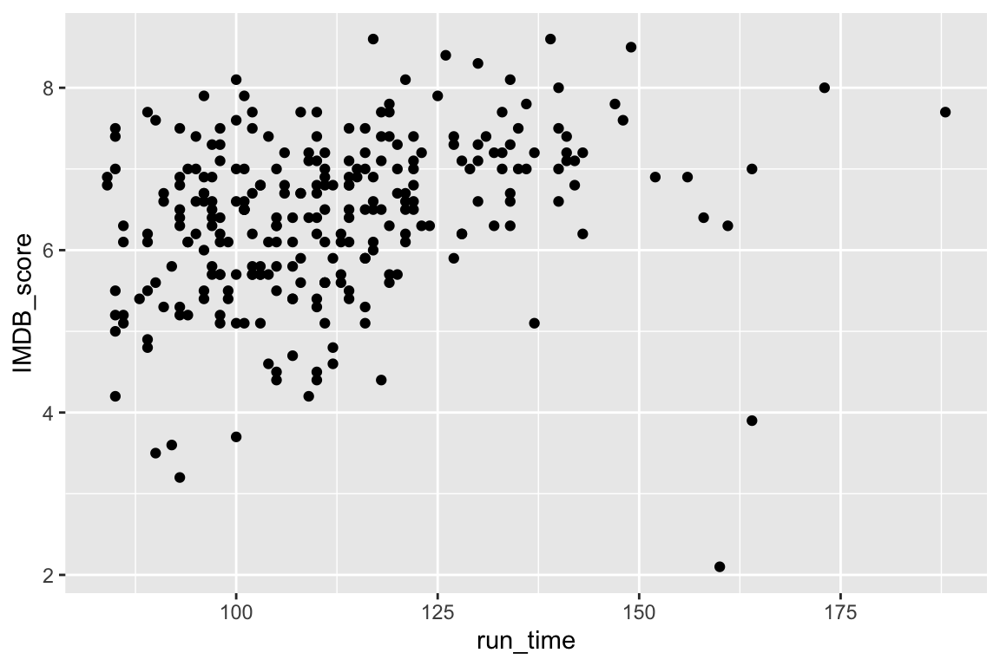
Example 1.1.2 Scatterplot with text labels
Out of curiousity, let's add the names of the films that scores especially high or low.
We'll see the filter command more later on.
ggplot(data = movies) +
geom_point(mapping = aes(x = run_time, y = IMDB_score)) +
geom_text(data=movies %>% filter(IMDB_score > 8 | IMDB_score < 4 ),
aes(x = run_time, y = IMDB_score, label = title, vjust=-1),
size = 2, color="red")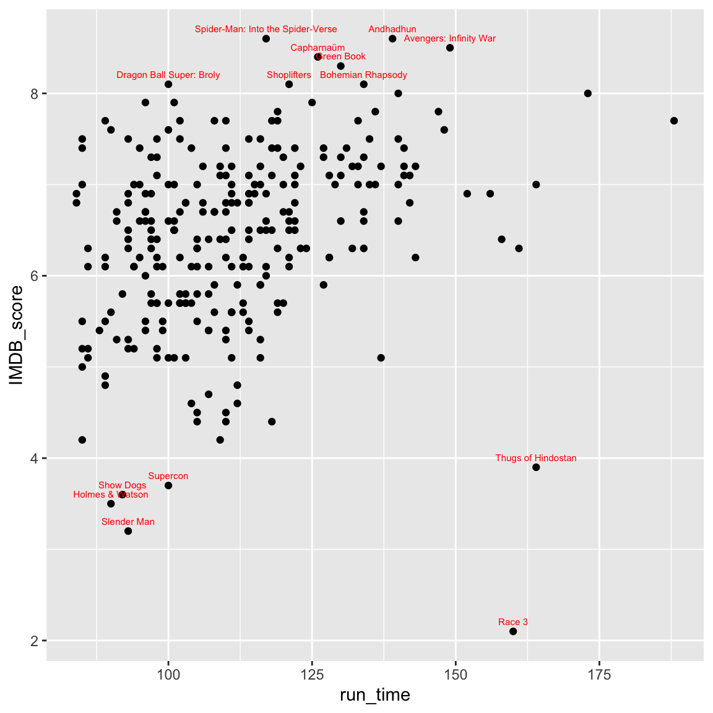
Example 1.1.3 Scatterplot with color, shape, and size
We can use color, shape, and size to convey information about other variables.
We'll use color for genre, shape for MPAA rating, and size for gross revenue generated.
Note that shape should be used for factor variables, and size for numeric variables. Color may be used for either.
ggplot(data = movies) +
geom_point(mapping = aes(x = run_time, y = IMDB_score,
color=genre, shape=MPAA_rating, size=gross))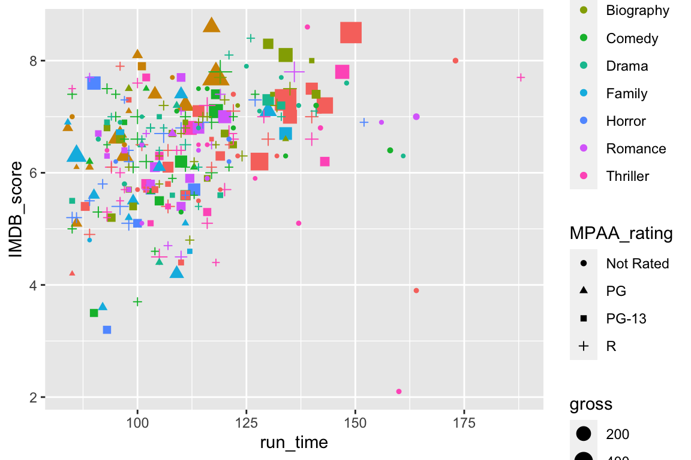
Example 1.1.4 Changing Axis Labels and Hiding Legend
ggplot(data = movies) +
geom_point(mapping = aes(x = run_time, y = IMDB_score,
color=genre, shape=MPAA_rating, size=gross)) +
xlab("Runtime (in minutes)")+ ylab("IMDB Score (out of 10)")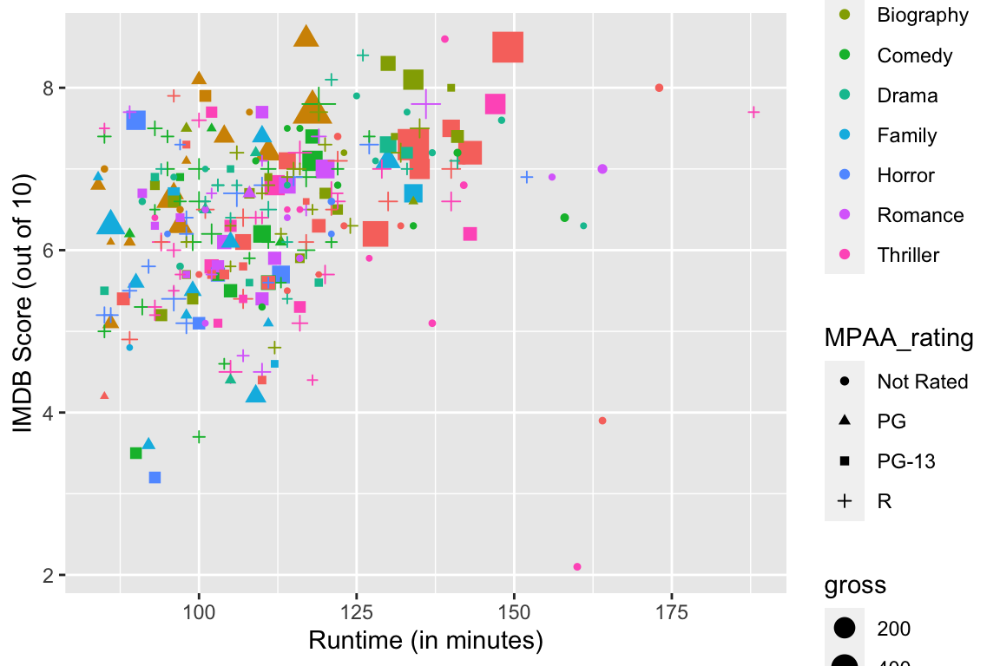
Practice 1.1.5
Fill in the blanks to create a scatterplot that shows IMDB score on the y-axis and critics score (meta_score) on the x-axis. Use color to denote MPAA_rating, and size to represent the number of votes on IMDB (vote). Add appropriate axis lables.
When you are done, remove eval=FALSE from the braces in the chunk heading, so your code will run.
ggplot(data = ___________) +
geom_point(mapping = aes(x = ____________, y = ___________,
color=__________, size=________)) +
xlab("_____________")+ylab("__________")1.2 More Graphics
1.2.1 Visualizing Quantitative Data (Continued)
Example 1.2.1: Faceting
facet_wrap() allows us to display a graph in multiple panels. You should only facet on categorical variables.
ggplot(data = movies) +
geom_point(mapping = aes(x = run_time, y = IMDB_score, color=MPAA_rating, size=gross)) +
facet_wrap(~ genre, nrow = 2) +
xlab("Runtime (in minutes)")+
ylab("IMDB Score (out of 10)")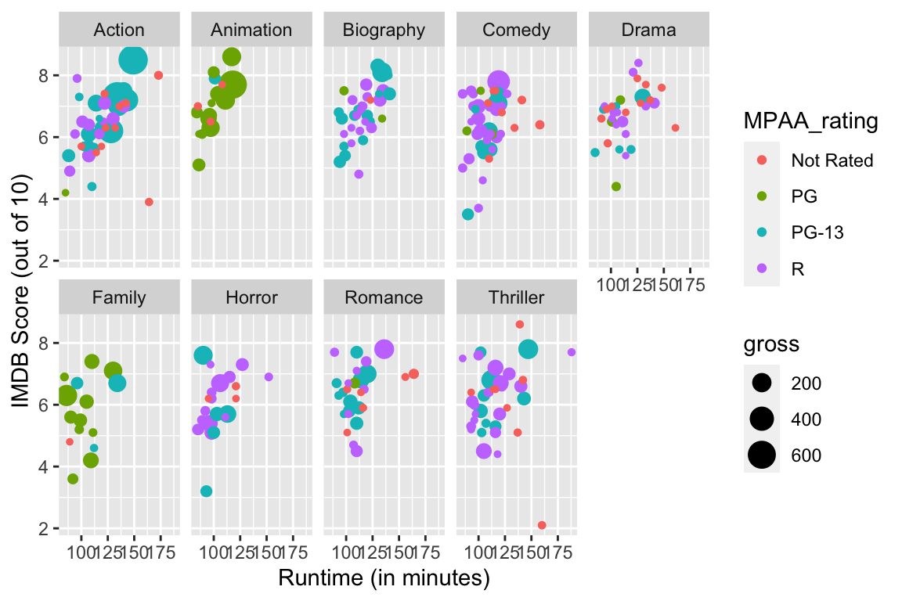
facet_grid() allows us to display a graph using a grid of categorical variables.
ggplot(data = movies) +
geom_point(mapping = aes(x = run_time, y = IMDB_score, size=gross)) +
facet_grid( MPAA_rating ~ genre) +
xlab("Runtime (in minutes)")+
ylab("IMDB Score (out of 10)")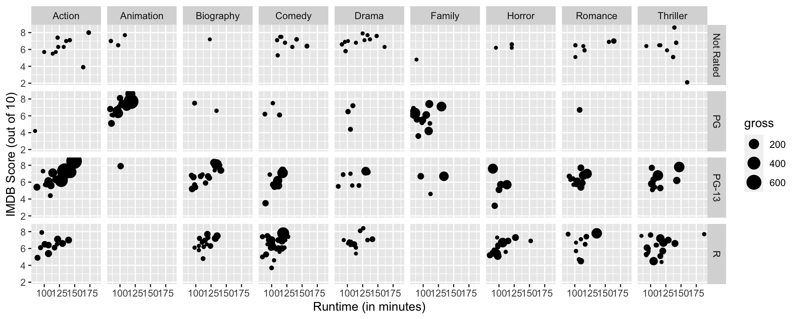
Example 1.2.2: Histograms
Histograms are useful for visualizing a quantitative variable.
ggplot(data = movies) +
geom_histogram(mapping = aes(x = run_time), color="white", fill="blue" ) +
xlab("Run time (in minutes")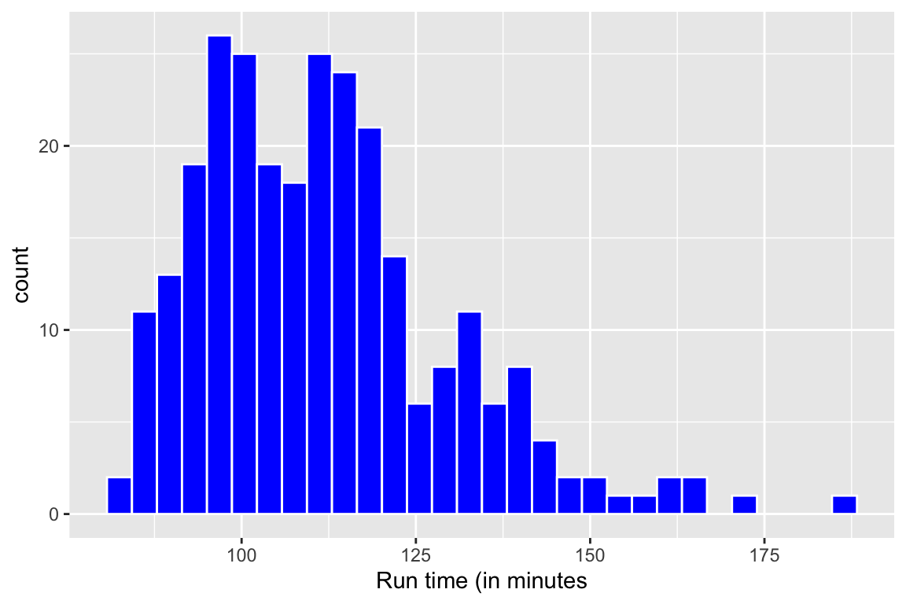
Example 1.2.3: Boxplots
Boxplots can be used to graph a single quantitative variable alone, or plotted against a categorical variable.
coordflip() flips the x and y axes.
ggplot(data = movies, mapping = aes(x = MPAA_rating, y = run_time)) +
geom_boxplot() + xlab("MPAA Rating") + ylab("Run time (in minutes)") +
coord_flip()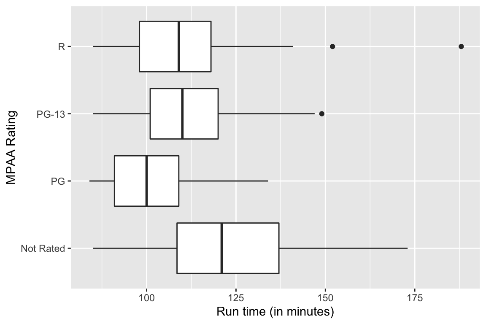
Practice 1.2.4
Fill in the blanks to create a histogram to visualize IMDB scores.
ggplot(data = _________) +
geom_histogram(mapping = aes(x = _________), color="white", fill="blue" ) +
xlab("_____________")Practice 1.2.5
Use faceting to display the histogram of scores for each genre separately.
ggplot(data = _________) +
geom_histogram(mapping = aes(x = _________), color="white", fill="blue" ) +
xlab("____________") +
facet_wrap(~_______, nrow=2) Practice 1.2.6
Fill in the blanks to create a boxplot to visualize IMDB scores by genre.
ggplot(data = movies, mapping = aes(x = ___________, y = ___________)) +
geom_boxplot() + xlab("____________") + ylab("_______________") +
coord_flip()1.2.2 Visualizing Categorical Data
Example 1.2.7: Bar Graph
Bar graphs are used to display frequencies for categorical variables.
ggplot(data = movies) +
stat_count(mapping = aes(x = genre), fill="blue") +
xlab("MPAA Rating")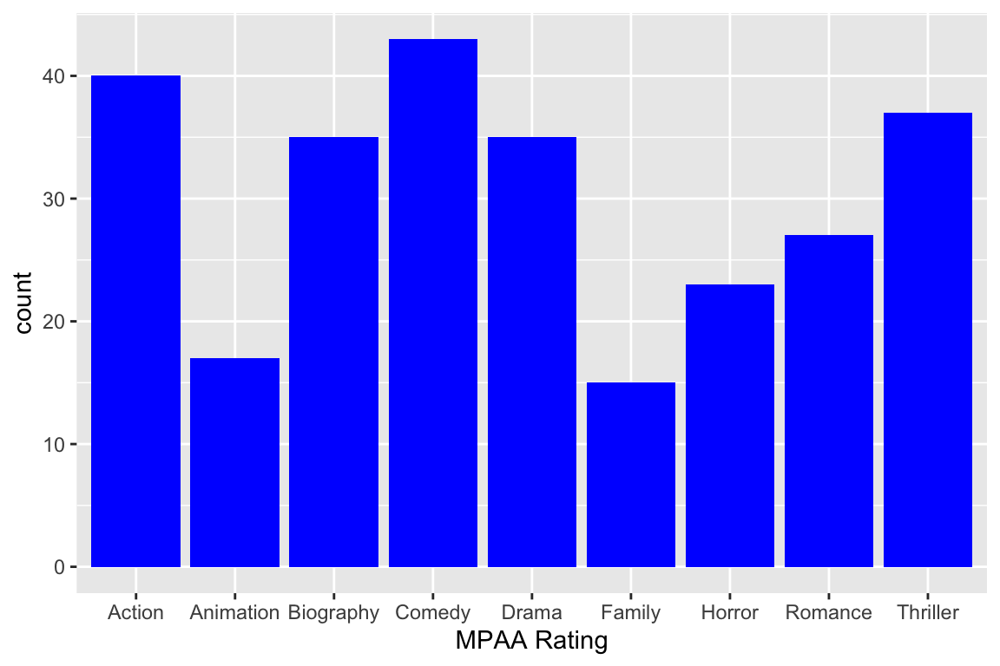
Example 1.2.8 Reordering Bars
Notice that, by default, R orders the bars alphabetically. We might wish to specify a different order, perhaps using decreasing bar height.
The fct_infreq command automatically orders factor variables according to frequency. See this link for more ordering options.
ggplot(data = movies) +
stat_count(mapping = aes(x = fct_infreq(genre)), fill="blue") +
xlab("MPAA Rating")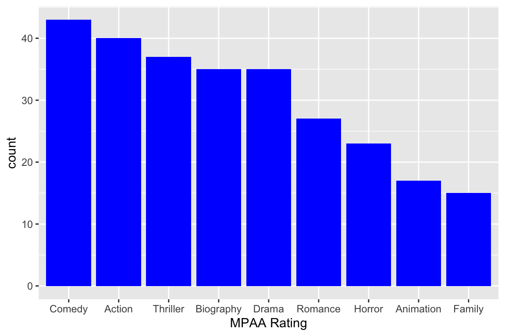
Example 1.2.9 Relative Frequency Bar Graph
ggplot(data = movies) +
stat_count(mapping = aes(x = genre, y = ..prop.., group = 1), fill="blue") +
xlab("MPAA Rating")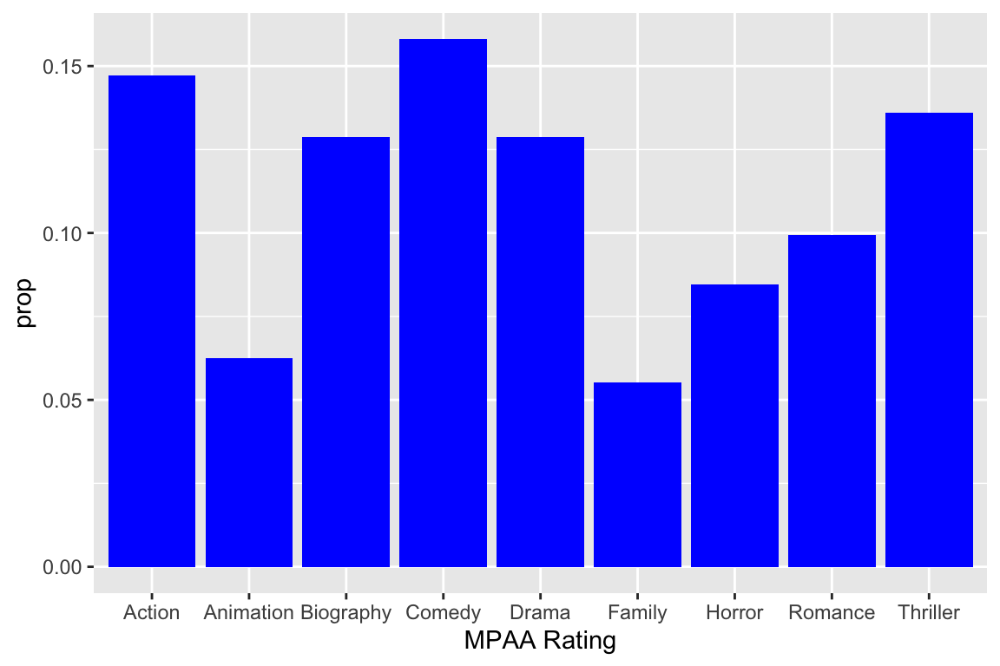
Practice 1.2.10
Fill in the blanks to create a bar graph displaying the number of films with each MPAA rating
ggplot(data = ___________) +
stat_count(mapping = aes(x = ____________), fill="blue") +
xlab("_____________")Practice 1.2.11
Copy/paste your code from above and modify it to display the bars in descending order of heights.
# type code herePractice 1.2.12
Copy/paste your code from above and modify it to display proportions, rather than counts on the y-axis.
# type code hereExample 1.2.13 Stacked Bar Graph
A stacked bar graph allows us to display information about two or more categorical variables.
ggplot(data = movies) +
stat_count(mapping = aes(x = genre, fill=MPAA_rating) ) +
xlab("Genre")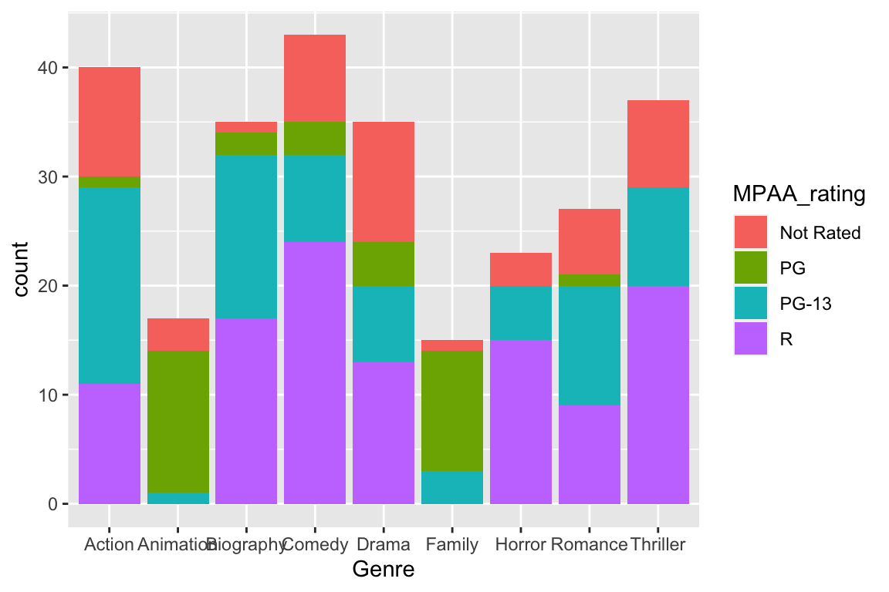
Example 1.2.14 Stacked Bar Graph with Equal Heights
When comparing percentages, it is useful to have bars of the same height. We can do this using position="fill".
ggplot(data = movies) +
stat_count(mapping = aes(x = genre, fill=MPAA_rating), position="fill" ) +
xlab("Genre")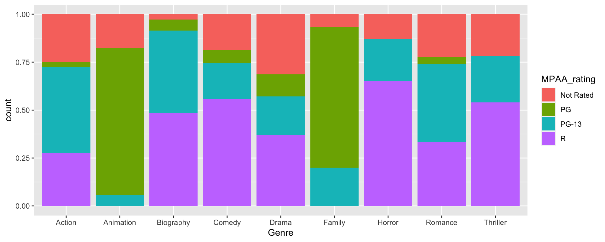
Example 1.2.15 Side-by-Side Bar Graph
Sometimes it is helpful to have side-by-side bars of different heights. This is done using position="dodge".
ggplot(data = movies) +
stat_count(mapping = aes(x = genre, fill=MPAA_rating), position="dodge" ) +
xlab("Genre")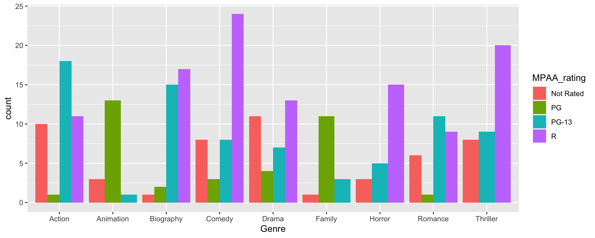
Example 1.2.16 Height Specified by Variable
Let's narrow down our dataset to the 5 most popular films, using the filter() command.
movies_subset <- movies %>% filter(title %in% c("Black Panther", "Avengers: Infinity War", "Incredibles 2", "Jurassic World: Fallen Kingdom", "Aquaman"))Let's create a bar graph that displays the number of IMDB users who rated each of these films (i.e. that vote) variable. Now, the height of the bars is given by variable in the dataset, rather than the number of occurances of a factor variable. We use the stat=identity command to tell R that the bar height is determined by the y-variable, rather than freqency.
ggplot(data=movies_subset) +
geom_bar(mapping=aes(x=title, y=vote), stat = "identity", fill="blue") +
xlab("Title") + ylab("Votes")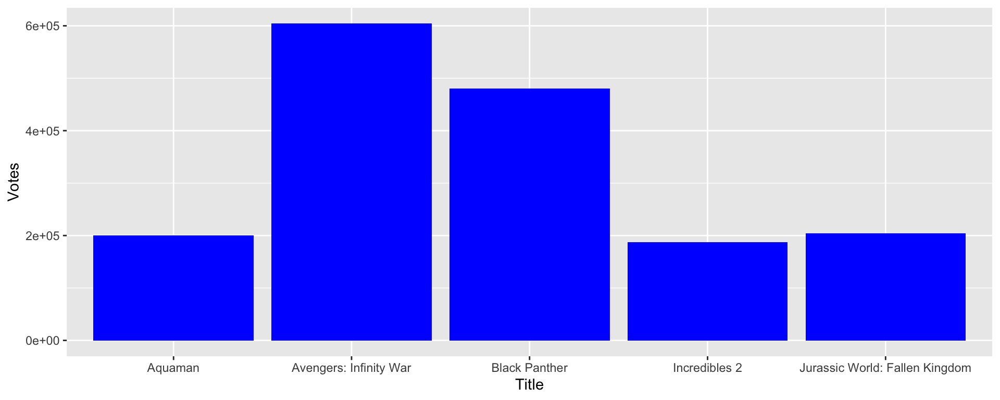
We can use fct_reorder() to reorder the bars by decreasing height. See link for more.
ggplot(data=movies_subset) +
geom_bar(mapping=aes(x=fct_reorder(.f=title, .x=vote, .desc=TRUE), y=vote), stat = "identity", fill="blue") +
xlab("Title") + ylab("Votes")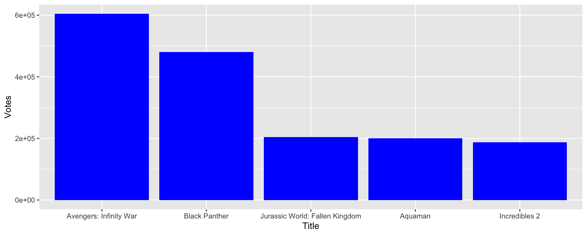
Practice 1.2.17 Height Specified by Variable
Copy/paste the code from Example 1.2.16 and modify it to display the 5 movies' gross revenue (gross) on the y-axis. Arrange in descending order.
# type code here1.3 Advanced Data Graphics
Let's take a look at some graphics that go beyond the basics. We'll recreate two graphics that orignally appeared in a fivethirtyeight.com blogpost How to tell Someone's Age when All You Know is Her Name
This example comes from Chapter 3 of Modern Data Science with R, by Baumer, Kaplan, and Horton.
library(tidyverse)
library(babynames)
library(mdsr)Babynames dataset
Babynames_data <- make_babynames_dist()
head(Babynames_data)## # A tibble: 6 x 9
## year sex name n prop alive_prob count_thousands age_today
## <dbl> <chr> <chr> <int> <dbl> <dbl> <dbl> <dbl>
## 1 1900 F Mary 16706 0.0526 0 16.7 114
## 2 1900 F Helen 6343 0.0200 0 6.34 114
## 3 1900 F Anna 6114 0.0192 0 6.11 114
## 4 1900 F Margaret 5304 0.0167 0 5.30 114
## 5 1900 F Ruth 4765 0.0150 0 4.76 114
## 6 1900 F Elizabeth 4096 0.0129 0 4.10 114
## # … with 1 more variable: est_alive_today <dbl>Example 1.3.1: Age Distribution for a Given Name
Choosing Name and Gender
Babyname <- Babynames_data %>% filter(name == "Joseph" & sex == "M")
name_plot <- ggplot(data=Babyname, aes(x=year)) +
geom_bar(aes(y=est_alive_today/1000), fill="#b2d7e9", color="white", stat="identity")
name_plot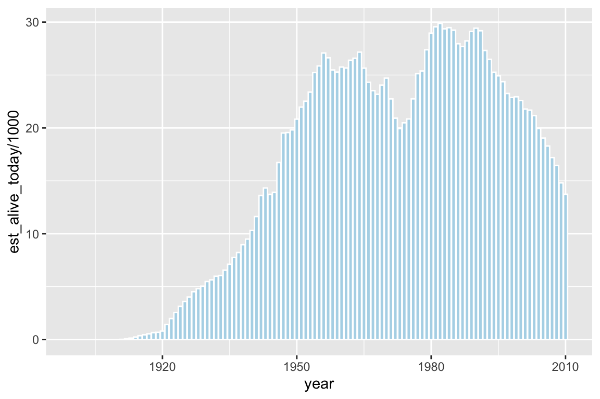
See the R Cookbook for more information on color palette.
Setting Axis Limits
name_plot <- name_plot + ylim(c(0,42))
name_plot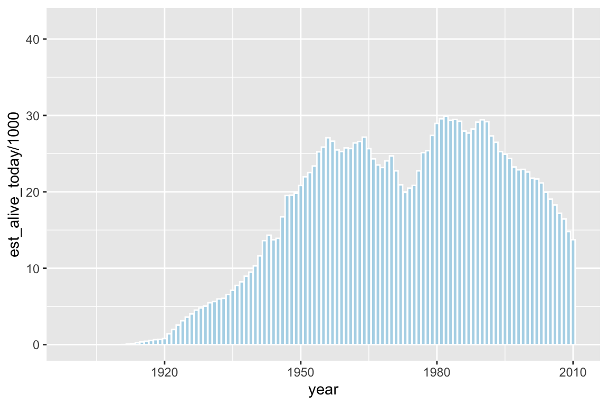
Adding Line
name_plot <- name_plot + geom_line(aes(y=count_thousands), size=2)
name_plot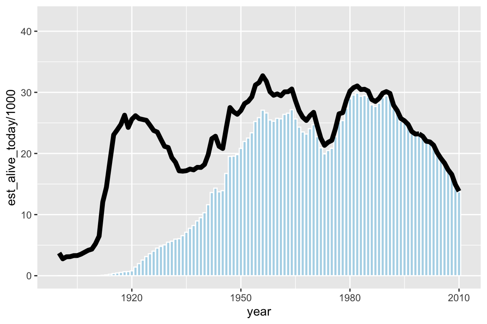
Axis Labels
name_plot <- name_plot +
xlab("Year") + ylab("Number of people (in thousands)")
name_plot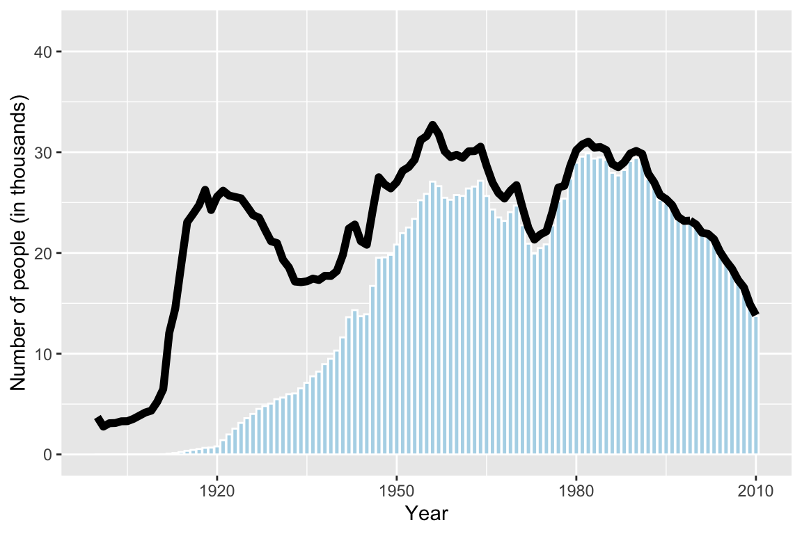
Adding Text
name_plot <- name_plot +
ggtitle("Age Distribution of American Boys Named Joseph") +
geom_text(x=1935, y=40, label="Number of Josephs\nborn each year") +
geom_text(x=1915, y=13, label="Number of Josephs \nborn each year\nestimated to be alive on \n 1/1/2014", color="#b2d7e9")
name_plot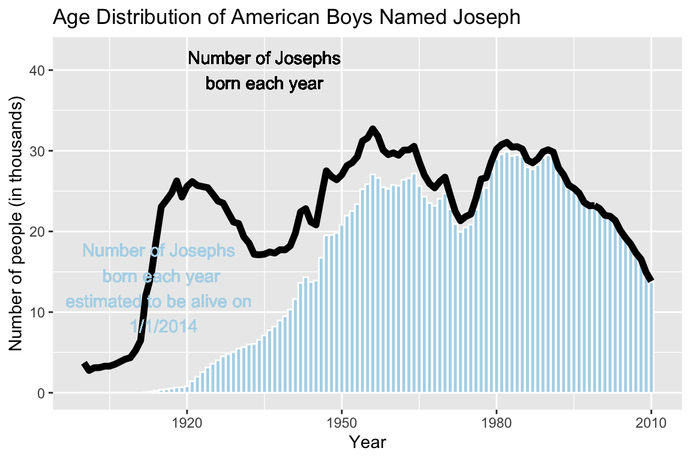
Adding Median Age
#install.packages("Hmisc")
library(Hmisc)
#wtd.quantile <- Hmisc::wtd.quantile
median_yob <- with(Babyname, wtd.quantile(year, est_alive_today, probs=0.5))
median_yob## 50%
## 1975name_plot <- name_plot +
geom_bar(stat="identity", color="white", fill="#008fd5", aes(y = ifelse(year==median_yob, est_alive_today / 1000 , 0)))
name_plot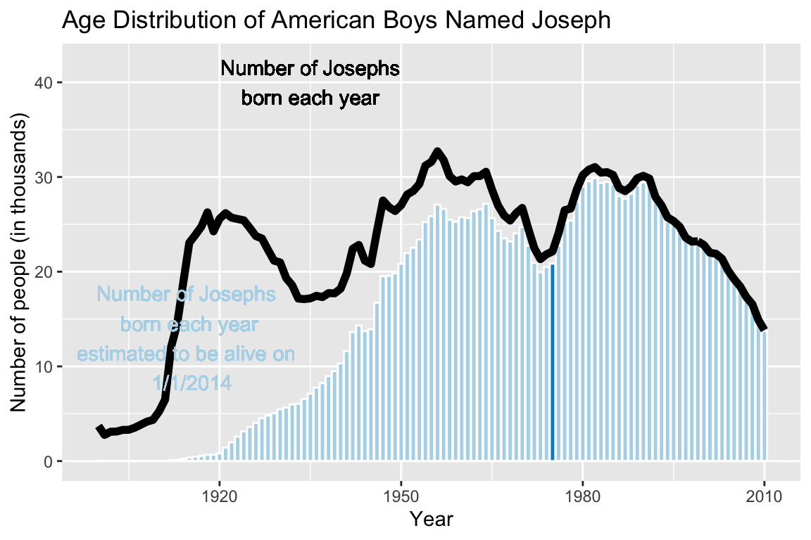
name_plot <- name_plot +
geom_text(x=2003, y=40, label="The median \nliving Joseph \nis 37 years old", color="darkgray") +
geom_curve(x=1995, xend=1974, y=40, yend=24, arrow=arrow(length=unit(0.3, "cm")), curvature=0.5)
name_plot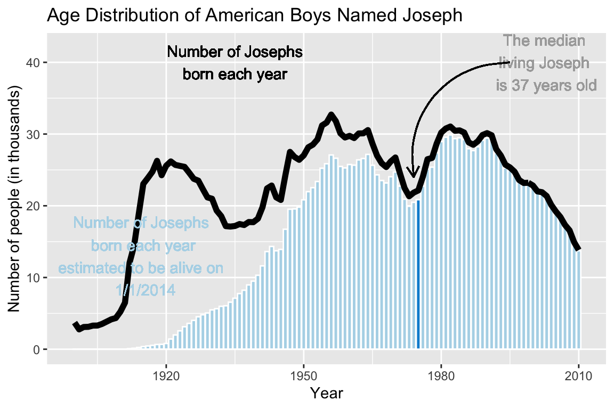
Example 1.3.2: Common Female Names
Some data prep
com_fem <- Babynames_data %>%
# hack added in 2nd edition
filter(n > 100) %>%
filter(sex == "F") %>%
group_by(name) %>%
mutate(wgt = est_alive_today / sum(est_alive_today)) %>%
summarise(
N = n(), est_num_alive = sum(est_alive_today),
q1_age = wtd.quantile(age_today, est_alive_today, probs = 0.25, na.rm = TRUE),
median_age = wtd.quantile(age_today, est_alive_today, probs = 0.5, na.rm = TRUE),
q3_age = wtd.quantile(age_today, est_alive_today, probs = 0.75, na.rm = TRUE)
) %>%
arrange(desc(est_num_alive)) %>%
head(25)Setup the Plot
We put the names along the x-axis in decreasing order of median age.
w_plot <- ggplot(data = com_fem,
aes(x = reorder(name, -median_age),
y = median_age)) +
xlab(NULL) + ylab("Age (in years)") +
ggtitle("Median ages for females with the 25 most common names")
w_plot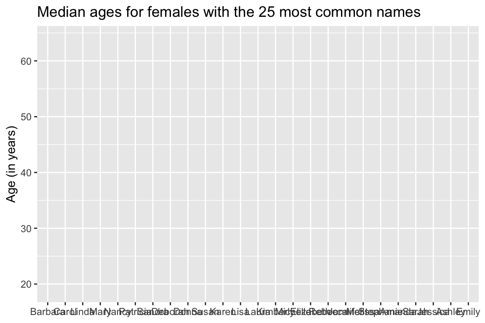
Add Linerange and color
w_plot <- w_plot +
geom_linerange(aes(ymin = q1_age, ymax = q3_age),
color = "#f3d478", size = 10, alpha = 0.8)
w_plot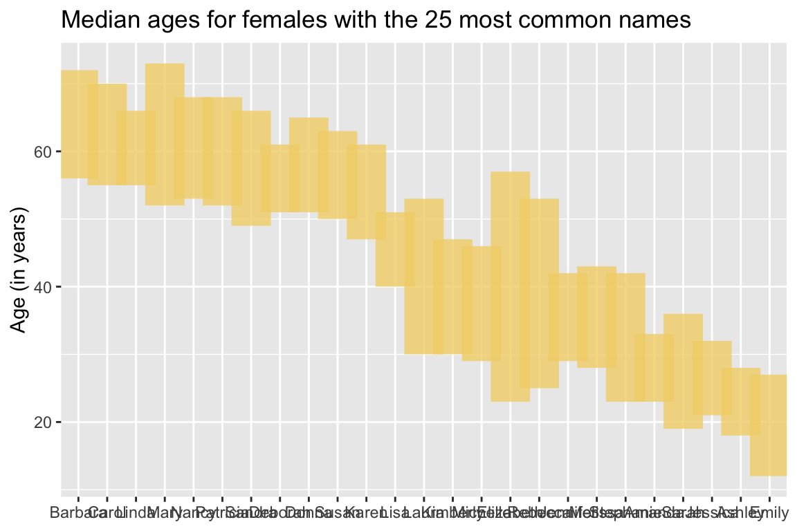
Add points at median
w_plot <- w_plot +
geom_point(fill = "#ed3324", colour = "white", size = 4, shape = 21)
w_plot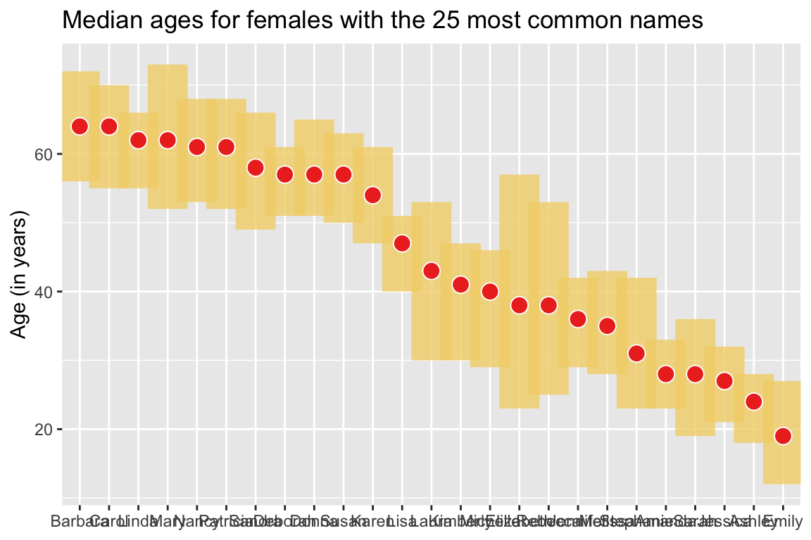
Add Labels and Flip Coordinates
w_plot <- w_plot +
geom_point(aes(y = 55, x = 24), fill = "#ed3324", colour = "white",
size = 4, shape = 21) +
geom_text(aes(y = 58, x = 24, label = "median")) +
geom_text(aes(y = 26, x = 16, label = "25th")) +
geom_text(aes(y = 51, x = 16, label = "75th percentile")) +
geom_point(aes(y = 24, x = 16), shape = 17) +
geom_point(aes(y = 56, x = 16), shape = 17) +
coord_flip()
w_plot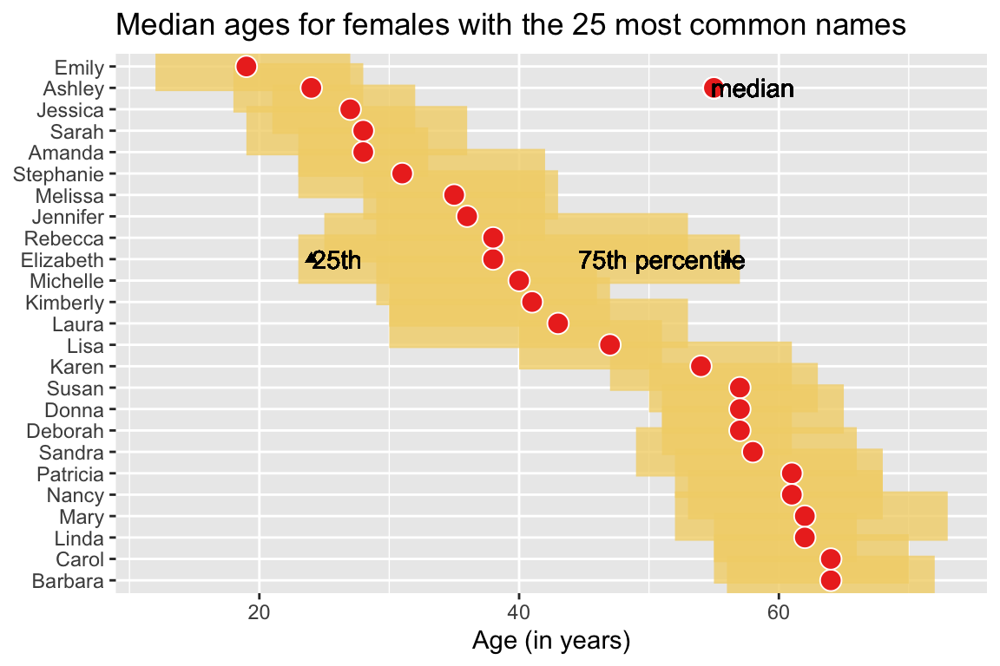